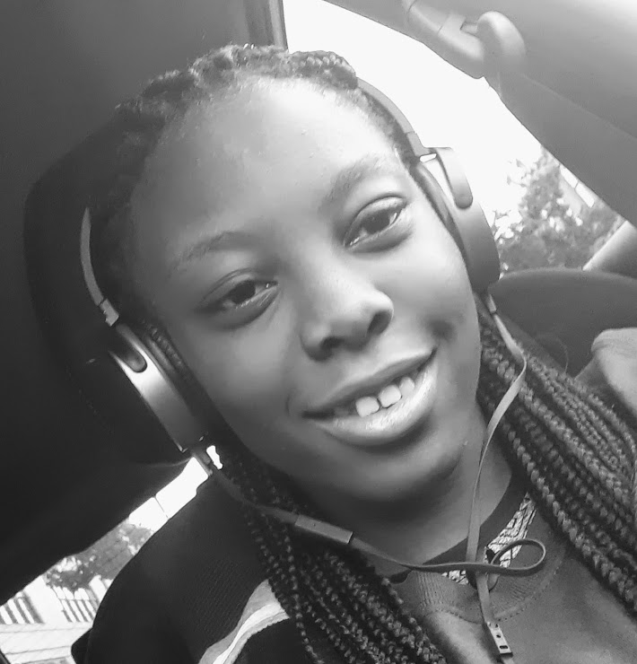
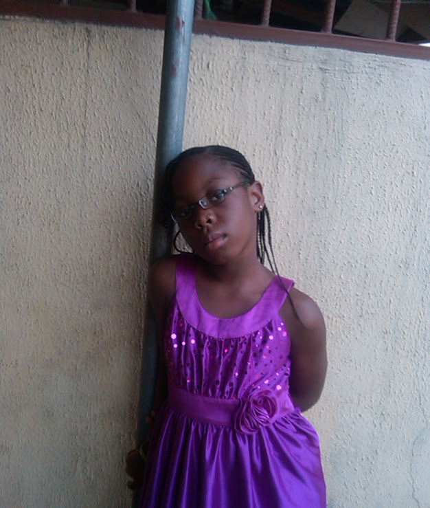
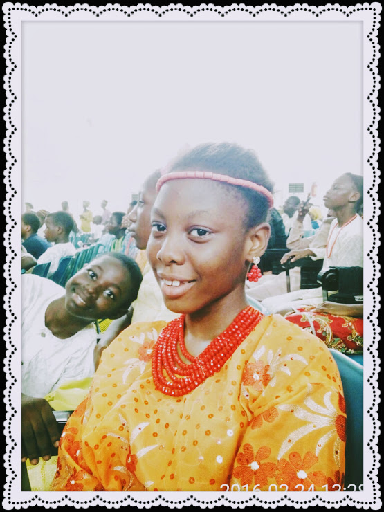

My name is Oluwadamilola Apara, but you can call me Dami, Mika or Damsel_Mika. Anyways, welcome to the "ABOUT ME" part of my home page. Here you'll get to know things about me like what my hobbies are and what I like and don't like , and my goals. So it's kind off written in form of an interview{Q&A}, hope you enjoy.
  A: Hi, I'm doing great thanks for asking. What about you? *smiles*
My full name is Oluwadamilola Apara Chiamaka Eniola Reigneth. I'm 15 years old.I was born on February 22nd 2004. I'm a pisces. If you didn't know Pisces is the twelfth astrological sign in the Zodiac. It is a negative mutable sign. It spans 330° to 360° of celestial longitude. Under the tropical zodiac, the sun transits this area between February 19 and March 20. So we Pisces are friendly people and our best match is a Scorpio. I also share sign with Celebrities ike Justin Bieber, BTS Suga and Rihanna.
I'm from the Yoruba tribe in Western-Nigeria, Ondo State to be precise. I grew up in Lagos though.I'm actually what you'll call Cultural Appropriation. My dad is yoruba and my mum is Kwale-two different tribes- and now I leave in the US. LOL.
*smiles*
Sure. Okay so I'm a friendly, kind, annoyinng and easy going person meaning I dont get angry easily. My favourite colors are Black and purple. I'm the first child and first grandchild in my family meaning a lot of responsibilities. I'm a music freak as my family will say lol. Um I'm very friendy and interactive and I love bear hugs lol. In my former school I was known as the hugger, no boy was even able to hug that tight.
*laughs*
I don't really have any like or dislike. Like I said I'm an easy going person, I don't hav anything I dislike in particular, It may just be at that moment that i dislike the thing, just like when I'm angry.
Yes I do not have a favourite dish. But I'm also very picky.
*laughs*
Yeah I have a few, my hobbies are:
*laugh*
I don't really watch tv, but these are the movies or shows I watch when I do.
tbody>
|
|
So this are basically my go to playlist(they are mostly songs by my favourite artists). They may seem old but I love them.
| Artist | Song | Artist | Song | Artist | Song |
|---|---|---|---|---|---|
| Justin Bieber |
|
BTS |
|
Ed Sheeran |
|
| Chris Brown |
|
Tayloy Swift |
|
Shawn Mendes |
|
| Khalid |
|
Jason Derulo |
|
Random |
|
My goal is to own an NGO in future and help as many as I can right now. I also wanna become a doctor. Don't ask me what type Because I also don't know. I just want a career where I'm able help those in need.
*smiles*
Thank's for your time Guys, I hope you enjoyed it, Bye!!!